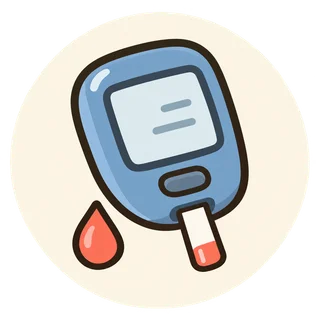

健診結果を、次の一歩へ
血糖・HbA1cの結果を読む
採血したときの血糖と、最近の血糖の傾向。二つを合わせて、次に何をするかを確かめましょう。
結果に書かれた判定と受診・再検査の案内を確認してください。基準範囲や治療目標は、施設や体の状態によって異なります。
1．検査の意味を知る
血糖値は、採血した時点の血液中のブドウ糖の濃さです。食事からの時間などで変わります。
HbA1c（ヘモグロビンエーワンシー）は、過去1〜2か月ほどの血糖の状態を反映します。直前の食事だけを見ている検査ではありません。
血糖とHbA1cは役割が異なります。一方の結果だけで、糖尿病かどうかや治療の必要性を決めることはできません。
2．相談の目安を確認する
要再検査・要受診などの判定があれば、案内された時期に相談してください。症状がなくても確認が必要です。のどの渇き、尿が多い、意図しない体重減少がある場合も伝えましょう。
受診の時期が分からない場合は、健診を受けた施設やかかりつけ医に確認しましょう。
3．今日できることを選ぶ
採血条件を確認
空腹時だったか、最後の食事はいつだったかを、結果と一緒にメモする。
生活を一つ振り返る
食事・飲み物・活動のうち、続けられそうな見直しを一つ選ぶ。
次の確認日を決める
食事だけで様子を見続けず、再検査の予定を確認する。
生活の工夫・薬について詳しく
参考資料
原稿・出典確認日：2026年10月27日。行動カードと質問例は、資料を踏まえた編集上の提案です。このページは一般的な情報であり、個別の診断・治療を決めるものではありません。